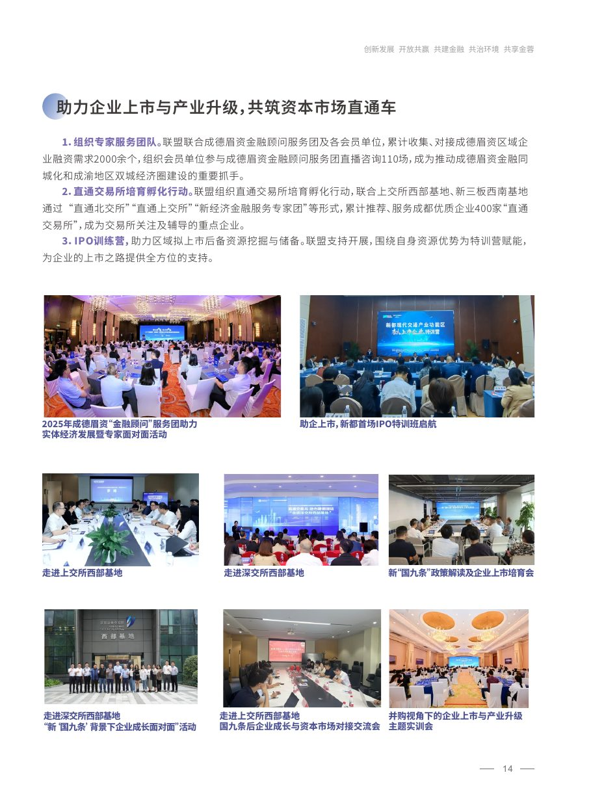
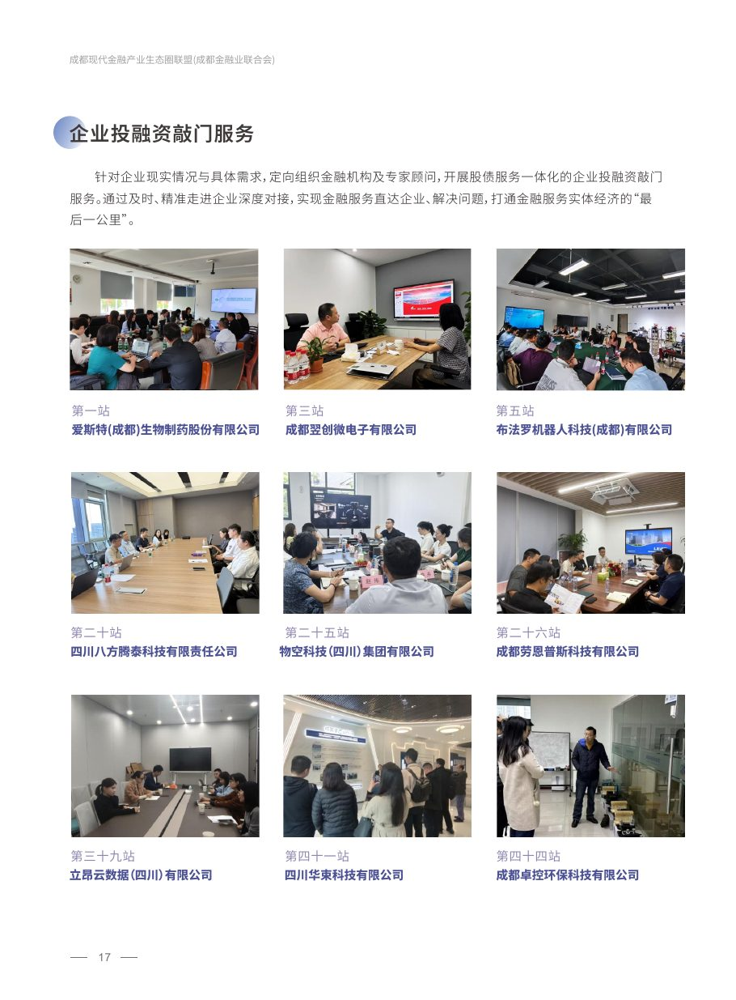
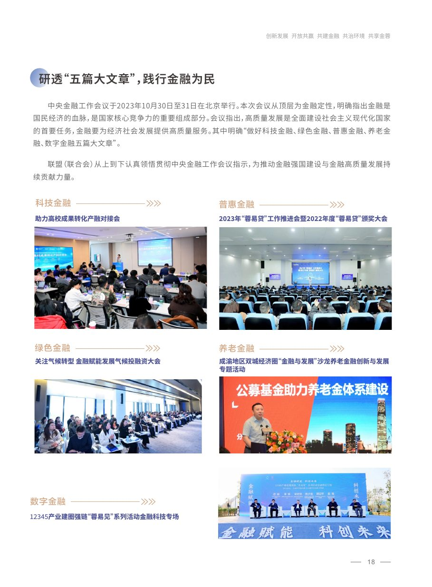

围绕企业行业、赛道、地域和成长阶段，匹配股权、债权、综合金融与资本市场资源，提供企业全生命周期综合金融服务。

定期开展重点产业链与园区产融对接，覆盖机器人、集成电路、航空航天、医药健康、新能源、新材料等产业。

围绕人工智能、机器人、智能制造、软件信息、数字文创、航空航天等领域构建投融资路演体系。

联合交易所相关资源，开展企业上市培育、IPO训练、并购实训及资本市场政策解读。

针对企业具体需求，定向组织金融机构与专家顾问上门服务，打通金融服务实体经济“最后一公里”。
